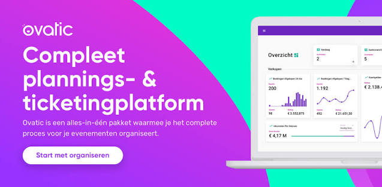

Ovatic - Internship project
During the internship I worked on the maintenance and further development of the ticketing and planning platform Ovatic. I contributed to REST APIs, front-end and back-end functionality, automated tests and releases. I also had pull requests reviewed and presented features during sprint reviews.
Website